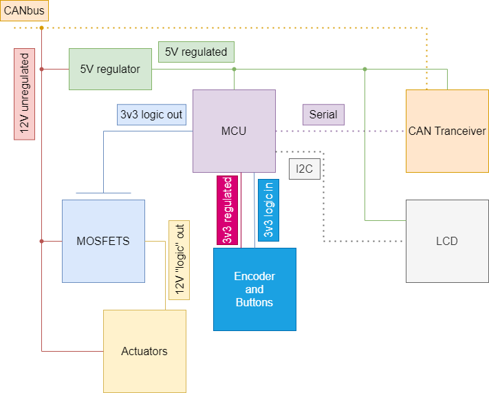

ECE499 Group 6: Nozzle Flow Control for Agricultural Integration
About the Team
Jensen Gillett - Computer Engineering - Team Lead - GitHub
Ben Lyne - Computer Engineering - Hardware Design - GitHub
Elliott Starchuk - Computer Engineering - Software Design - GitHub
Background
This project was suggested by Nozzle Ninja, an agricultural supply retailer in Stettler, Alberta.
Nozzle Ninja sought to create a reduced cost device that interfaces between an ISOBUS display
and the nozzles of a tow-behind sprayer[1].
Current per-nozzle control systems can retail around
$12,000[1], and by creating a lower-cost alternative, enables farmers to make their operations
more cost-effective and environmentally friendly.
Further, the device could serve to lower the
barrier of entry to farming by allowing new farmers to access what previously was a high cost,
sophisticated system.
Design
To create a prototype, the team opted for a two unit solution. One unit would be the command unit,
which stands in for a high cost ISOBUS display, while the other unit would be the actuator unit, responsible
for actuating the nozzles.
All design documents, including circuit schematics, PCB designs, and software
can be found on the project GitHub.
Each unit is centered around a Xiao ESP32-C3 microcontroller[2], and contains a shared design PCB
to cut down on manufacturing costs.
Each PCB contains two main voltage rails: a 12V and a 5V rail. The 12V
rail is used to control the actuators, as well as supplying the 5V rail after passing through a 5V regulator.
The microcontrollers use 3v3 logic to control connected peripherals, so in order for the actuator unit to control
the actuators, MOSFETs are used[3].
In addition to power connections, the PCBs also contain a debounce circuit, used
to debounce the hardware inputs on the command unit.
A block diagram of the hardware can be seen below.

The software of the prototype was written using C++ using C-style linkages.
C++ was chosen as the language
of implementation because of AgIsoStack++[4], the programming library that was chosen to implement ISOBUS
communication.
The command unit software was responsible for handling user input from a rotary encoder/button
combo, while the actuator unit software was responsible for actuating the connected nozzles.
Results
The final prototype provides a good starting point for a more fully featured future design, despite some setbacks
during the prototyping process.
One issue encountered during prototyping was the unfortunate failure of one of the CAN bus modules[5], which was
going to be used in order to implement ISOBUS communication.
Due to time constraints, a replacement was not
sourced, and the team instead pivoted to using UART communication between the two units.
Another issue encountered was the rotary encoder, a pivotal part of the user interface, displaying inaccurate and
unexpected behaviour.
After some investigation, the team uncovered the cause of the behaviour.
Unable to correct
this behaviour in hardware, a software rewrite for the command unit was initiated, which was successful in suppressing
the unintended behaviour.
The final prototype met the original specifications of having the command and actuator unit communicate with
each other, as well as the having the actuator unit act on commands sent from the command unit.
Although no
nozzles were attached to the actuator unit, LEDs were used to simulate the actuating of nozzles.
A finalized prototype can be seen below, with the actuator unit on the left, and the command unit on the right.

Acknowledgement
Thank you to Dr. Mihai Sima for assisting us as our faculty supervisor and providing feedback on our project.
Thank you to Mike Wengryn from Nozzle Ninja, for providing the project idea and existing components to use as reference for the design.
Thank you to Viktor Sarnev for providing us with 3D printed components on a very tight timeline.
Thank you to JLCPCB for manufacturing our PCB design.
Thank you to the UVic ECE Department and CEWIL for providing funding to cover the costs of this project.
Final Report
You can download a copy of the final report from the link below.
Final Report